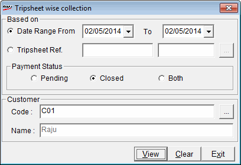

to select the required trip sheet number.
to select the required trip sheet number.This report enables user to identify the source of bill, and the payment collection against it. It will also show the remote bills, against which payment has been collected in the current company.
How to reach: Reports > Cash > Trip Sheet Collection Report
The Tripsheet wise collection window is displayed.

Based On: The report can be generated based on Date Range or Trip Sheet reference number.
Date Range: Enter/Select the opening and closing dates for which the report is to be generated. By default, the From and To are the current Shoper date. You can enter any date range but the To date cannot be greater than the Shoper date.
Tripsheet
Ref.: Enter the trip sheet number or press F2
or click
to select the required trip sheet number.
Payment Status: Select the payment status( Pending or Closed or Both) for which the report needs to be generated.
Customer
Code:
Enter the customer code or press
F2 or click to select
the required customer code.
Name: The name of the customer is displayed after the entry or selection of the customer code.